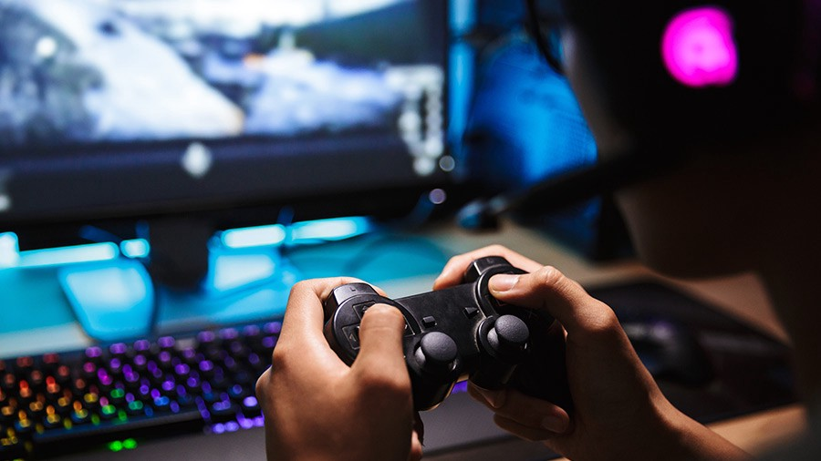

Berenang adalah gerakan sewaktu bergerak di air. Berenang biasanya dilakukan tanpa perlengkapan buatan. Kegiatan ini dapat dimanfaatkan untuk rekreasi dan olahraga. Berenang dipakai sewaktu bergerak dari satu tempat ke tempat lainnya di air, mencari ikan, mandi, atau melakukan olahraga air.Berenang sangat berguna sebagai alat pendidikan, sebagai rekreasi yang sehat, menanamkan keberanian, percaya diri, dan sebagai terapi yang terkadang dianjurkan oleh dokter, serta untuk keselamatan diri atau orang lain.[1] Berenang untuk keperluan rekreasi dan kompetisi dilakukan di kolam renang. Manusia juga berenang di sungai, danau, dan laut sebagai bentuk rekreasi. Olahraga renang membuat tubuh sehat karena hampir semua otot tubuh dipakai sewaktu berenang.
Bersepeda adalah sebuah kegiatan rekreasi atau olahraga, serta merupakan salah satu moda transportasi darat yang menggunakan sepeda. Sepeda pertama kali diperkenalkan pada abad ke-19 Masehi. Banyak penggemar bersepeda yang melakukan kegiatan tersebut di berbagai macam medan, misalnya perbukitan, medan yang terjal maupun hanya sekadar dipedesaan dan perkotaan saja. Orang yang mempergunakan sepeda sebagai moda transportasi rutin juga dapat disebut komuter. Penggunaan sepeda sebagai moda transportasi rutin tidak hanya dilakukan oleh pekerja yang bekerja di sektor non-formal, tetapi juga dilakukan oleh pekerja yang bekerja di sektor formal. Para pekerja di sektor formal yang menggunakan sepeda sebagai moda transportasi rutin ini sebagian besar tergabung dalam komunitas pekerja bersepeda atau yang dikenal dengan nama Bike To Work Indonesia (B2W Indonesia).Selain para pekerja, sepeda juga banyak digunakan oleh anak sekolah. Selain karena menggunakan sepeda tidak membutuhkan biaya tambahan, bersepeda juga dapat dilakukan di jalan yang kurang bagus sekalipun.
A gamer is a person who plays interactive games, especially video games, tabletop role-playing games, and skill-based card games, and who plays for usually long periods of time. Some gamers are competitive, meaning that they compete in some games for money. In some countries such as the UK and Australia, the term "gaming" can refer to legalized gambling, which can take both traditional and digital forms, through online gambling. There are many different gamer communities around the world. Since the advent of the Internet, many communities take the form of Internet forums or YouTube or Twitch virtual communities, as well as in-person social clubs. Originally a hobby, it has evolved into a profession for some. In April 2020, researchers found that top gamers shared the same mental toughness as olympian athletes